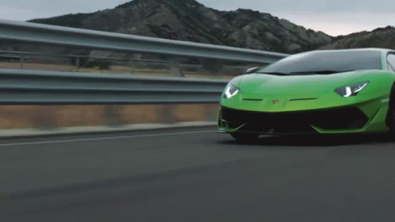
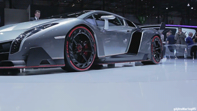

Lamborghini
Estereotípicamente, los italianos no son personas tranquilas, y esto se refleja en
sus autos. Los Lamborghinis son generalmente rápidos y ruidosos. El primer Lamborghini
fue revolucionario. Desafortunadamente, como un automóvil italiano estereotípico, a
menudo se negaban a funcionar correctamente.
Ferrucio Lamborghini, el fundador de la empresa, era un exitoso fabricante de tractores,
por lo que era de esperarse problemas con algunos de los primeros autos. Sin embargo,
a lo largo de los años, han mejorado el diseño y la potencia de los autos para ayudarlos
a alcanzar niveles completamente nuevos de locura. Automobili Lamborghini SpA, también
conocida como Lamborghini , tiene su sede en Sant'Agata Bolognese.
Origen
Fundada por Ferruccio Lamborghini, Lamborghini comenzó como una empresa de construcción de tractores
en el pueblo de Sant'Agata Bolognese, entre Bolonia y Módena. Sin embargo, las prioridades
de Ferruccio Lamborghini cambiaron cuando fue a encontrarse con Enzo Ferrari en la fábrica
de Ferrari en Maranello, Italia, para quejarse de la calidad del embrague en su Ferrari 250.
Ferruccio recibió una respuesta desdeñosa de Ferrari, quien le dijo a Lamborghini que "el
El problema no es el auto, sino el conductor", y le sugirió cuidar sus tractores y dejar
los deportivos a otros. Un Lamborghini resentido regresó a su fábrica y, después de desmontar
la transmisión del Ferrari defectuoso, descubrió que estaba construida con la misma transmisión
que usaba en sus propios tractores. Animado por el descubrimiento, Ferruccio Lamborghini
recurrió al talento de Giotto Bizzarrini, Gian Paolo Dallara, Franco Scaglione y Bob Wallace,
quienes trabajaron en lo que Ferruccio imaginó como su gran turismo para rivalizar con Ferrari.
El resultado eventualmente se convertiría en el prototipo GTV. Al año siguiente,
Lamborghini debutaría con el 350GT.
Algunos Modelos
Lamborghini Aventador
El Lamborghini Aventador LP700-4 es un automóvil deportivo de dos puertas y dos plazas presentado
públicamente por Lamborghini en el Salón del Automóvil de Ginebra el 28 de febrero de 2011, cinco
meses después de su presentación inicial en Sant'Agata Bolognese.

Lamborghini veneno
El Lamborghini Veneno Roadster lleva la eficiencia aerodinámica de un prototipo de carreras a las
carreteras de todos los días. Este superdeportivo se caracteriza por una aerodinámica óptima,
para garantizar la estabilidad en las curvas rápidas y un comportamiento similar al de un prototipo
de carreras. Todo esto en un coche diseñado para la carretera. El coche ideal para los amantes de
la conducción deportiva.
